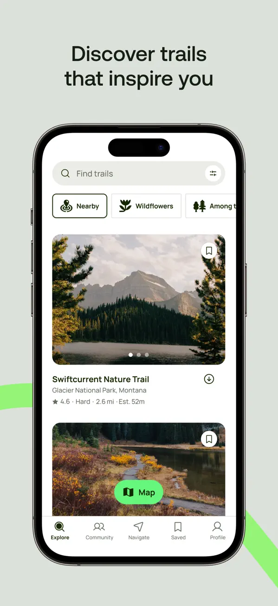
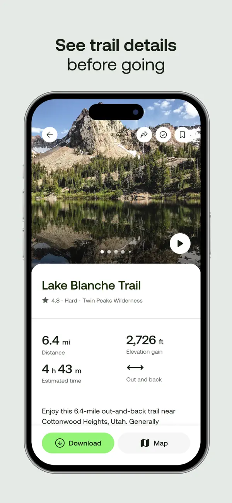
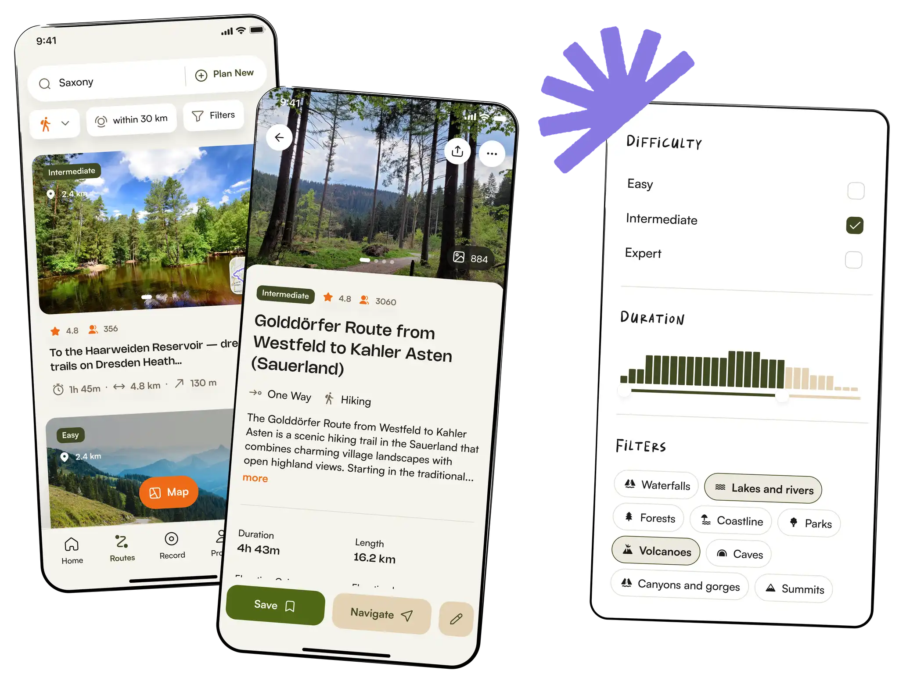
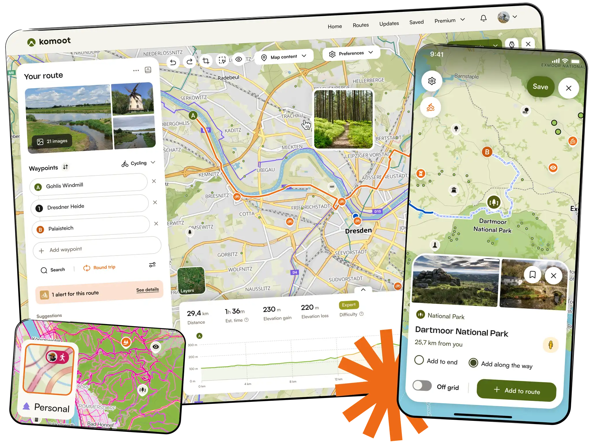
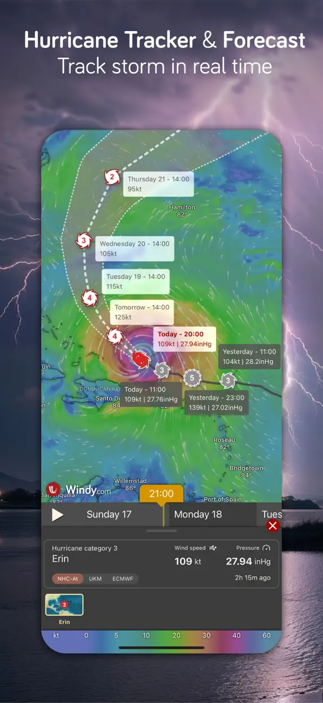
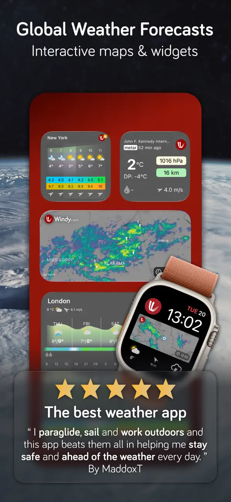
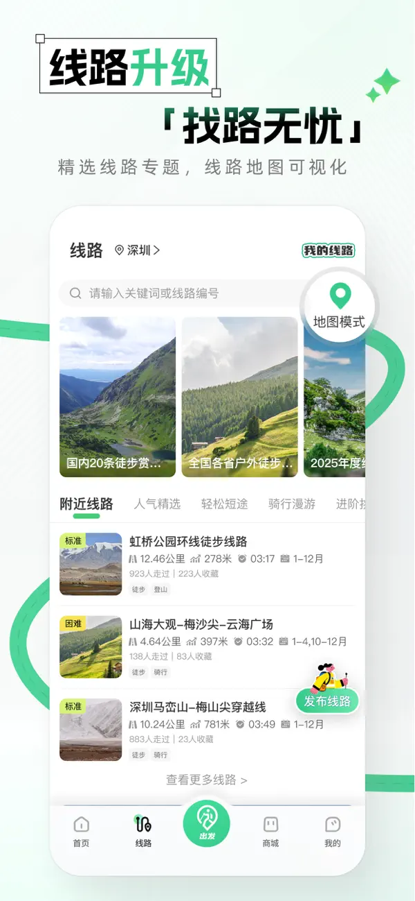
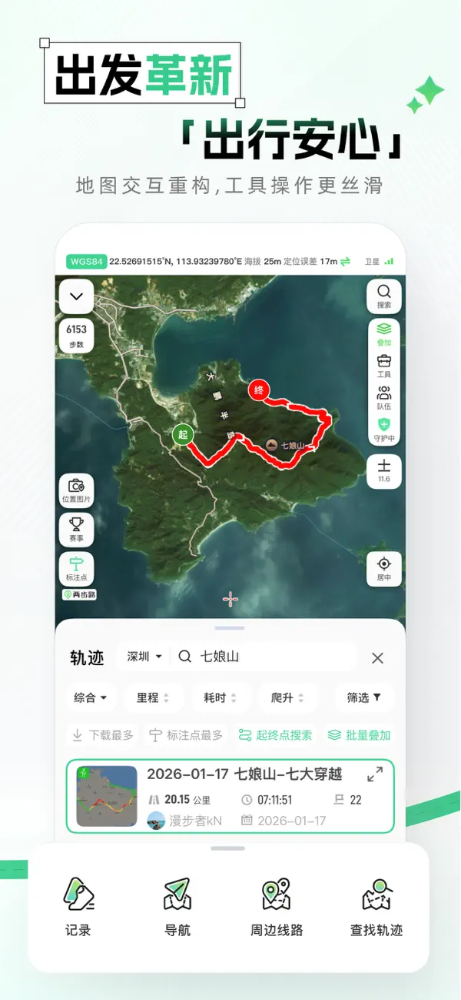

研究结论 · 设计建议
Luma 的组织骨架 × AllTrails 的路线层级
用 komoot 补足地图与节点操作，用 Windy 校准专业数据的表达。统一基础控件与状态，让活动介绍、名单执行、天气图表各有合适的密度。
下方为官方宣传图片及其视觉观察，不是本次登录实测截图。OurTrail 示例与色值均为新提案。01
活动组织的主要参考
Luma
日期建立节奏，名单承接操作。
02
路线信息的主要参考
AllTrails
照片吸引，指标帮助决定。

官方来源 ↗ · 点击图片放大

官方来源 ↗ · 点击图片放大
03
地图与节点交互参考
komoot
让操作始终围绕当前地点。

官方来源 ↗ · 点击图片放大

官方来源 ↗ · 点击图片放大
04
熟人邀请的表达参考
Partiful
活动本身比工具品牌更突出。
官方来源 ↗ · 点击图片放大
05
专业天气信息参考
Windy
时间、读数、来源一起解释画面。

官方来源 ↗ · 点击图片放大

官方来源 ↗ · 点击图片放大
06
中文户外表达参考
两步路
路线能比较，地图能辨认。

官方来源 ↗ · 点击图片放大

官方来源 ↗ · 点击图片放大
DESIGN DIRECTIONS / 三种可比较的方向
先确定表达方式，再选颜色。
A · 推荐作为全局基础清晰的同行工具
白底、深墨文字、克制的青绿操作。用日期、标题、数字形成层级，列表直接承接任务。
适合活动、名单与现场；不依赖摄影素材，现有数据能够支撑。
B · 内容页参考山野编辑式
暖白、橄榄色、自然影像、清晰分章。给活动内容留出呼吸感。
照片来源是前置条件；不能让长图和大留白拖慢名单处理。
C · 专业视图参考专业户外仪表
地图与图表居中，读数紧凑、单位就近，颜色承担数据语义。
适合局部专业视图；全站深色及日间可读性需进一步设备验证。
OURTRAIL TRANSLATION / 以下为原创设计提案
把参考转成真实组件规则。
借组织方式，不借不存在的功能。
活动行 · 日期优先
示例日期31周六
周末山间同行示例活动 · 12 km · 爬升 650 m
我的报名：等待审核
我的报名：等待审核
无封面也成立。标题、路线指标、个人状态各占一层；实际文案由现有状态翻译层生成。
人员行 · 多种状态分开
示例林
林同学自行前往
报名待审核
报名待审核
此处是静态视觉样本。只有权限允许时展示对应操作；自行前往不算未分车。
另外四类组件：活动概要（路线指标与角色行动） · 状态筛选栏（数量与搜索范围） · 节点面板（地图选中对象与海拔来源） · 天气证据区（同一时刻读数与未知原因）。
完整参数、页面映射和验收题见研究报告。
完整参数、页面映射和验收题见研究报告。